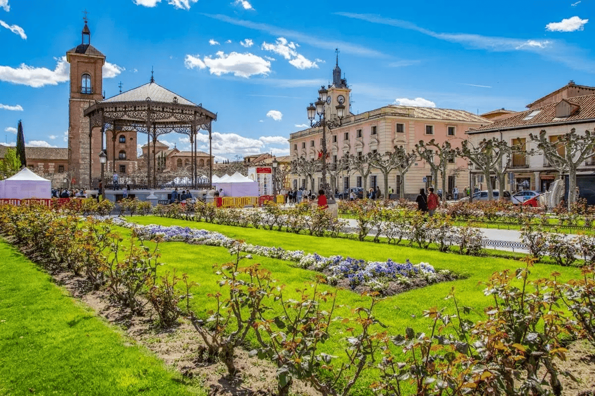
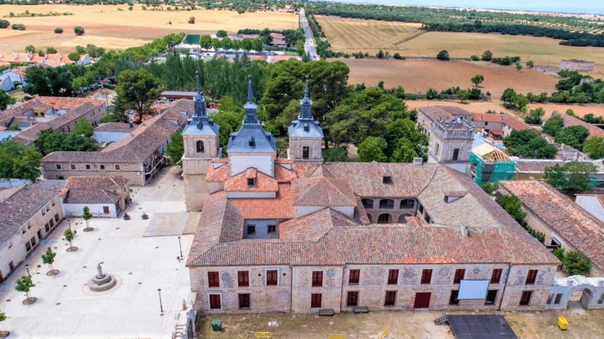
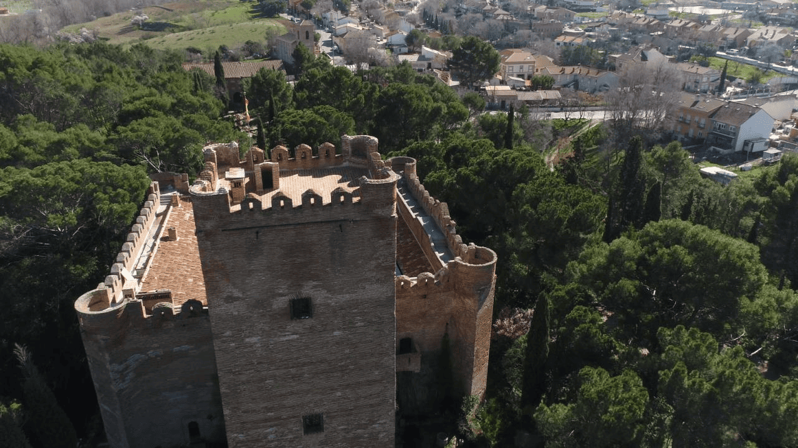

Madrid es cultura y vida en la calle. En la capital dispones de muchos de los museos más visitados de España y en los alrededores podrás visitar conjuntos monumentales impresionantes.
La ciudad de Madrid es abierta y acogedora, moderna y tradicional, majestuosa y popular, animada y tranquila. Pero sobre todo es cultura. En ella se encuentra el conocido como Triángulo del Arte, que engloba en muy poco espacio el Museo Nacional del Prado, el Museo Nacional Centro de Arte Reina Sofía y el Museo Thyssen-Bornesmiza.

Nuevo Baztán
Juan de Goyeneche fundó, en el siglo XVIII, este pueblo, tras encargar su diseño al arquitecto José de Churriguera. Su casco antiguo está declarado Bien de Interés Cultural.
El estilo barroco es una constante en el casco antiguo de esta localidad, situada a unos 45 kilómetros de la capital, al sudeste de la Comunidad de Madrid. El conjunto monumental está constituido por el Palacio de Goyeneche, la Iglesia de San Francisco Javier y las dos plazas aledañas. El Palacio está flanqueado por un torreón, adornado con remates de bola y tiene dos plantas, engalanadas con arcos de medio punto.

Batres
Batres está muy vinculado a una de las figuras más importantes de la literatura española, Garcilaso de la Vega. En su emblemático castillo pasó parte de su infancia el poeta, ya que sus padres ostentaron el señorío de la localidad. Su casco antiguo está declarado Bien de Interés Cultural.
Batres se sitúa a unos 44 kilómetros de la ciudad de Madrid, junto al río Guadarrama. El Castillo de Batres es, sin duda, el gran protagonista. De planta cuadrada, data del siglo XV y está construido en barro cocido sobre cimientos de pedernal. Resulta peculiar por las torres en forma de rombo que tiene en las esquinas, que aparecen rematadas en la parte superior por terrazas circulares. La más alta, la Torre del Homenaje, mide 25 metros. En el conjunto de la fortaleza sobresale la bella balconada de hierro, además del patio interior renacentista con sus galerías platerescas.
En el área del castillo también se encuentra la llamada Fuente de Garcilaso, situada bajo un arco de ladrillo y enmarcada por lápidas de mármol con versos inscritos.

San Lorenzo de El Escorial
En plena Sierra de Guadarrama, a tan sólo 50 kilómetros de Madrid, se emplaza la localidad de San Lorenzo de El Escorial..
El Monte Abantos, su pinar y la dehesa de La Herrería componen el paisaje natural de este lugar, que tiene en el Monasterio de El Escorial su eje principal.
En su trazado urbano armonizan casas señoriales de estilo herreriano, con avenidas racionalistas y pequeñas plazas de diseño anterior.
Enclavada en la sierra madrileña ofrece multitud de oportunidades de ocio y rutas culturales, como las que llevarán al viajero a Ávila, Segovia, Toledo o Madrid.